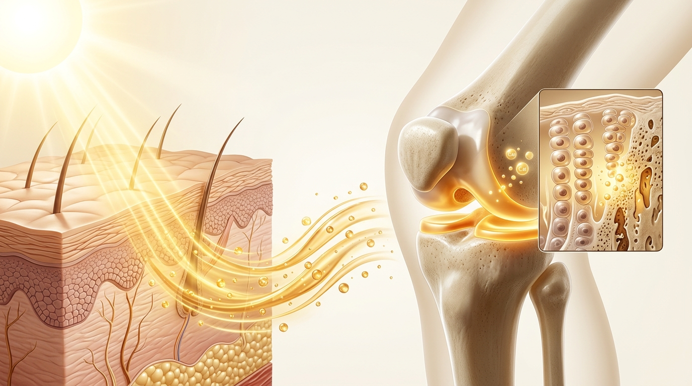

무릎 · 하지성장 · 2026.11.11 발행
실내에만 머무는 겨울철, 햇볕을 쬐지 못하면 왜 무릎 성장 연골도 함께 느려질까요?
💡 바쁜 부모님을 위한 30초 핵심 결론
추운 날씨에 실내에서만 생활하면 피부에서 합성되는 비타민 D3가 급격히 줄어들어, 식사로 섭취한 칼슘이 장에서 흡수되지 못하고 무릎 성장판 연골이 단단한 뼈로 바뀌는 ‘골기질 석회화’ 속도까지 함께 늦춰집니다. 하루 15~20분 낮 산책과 비타민 D 식단으로 겨울철 숨은 키 손실을 막아주세요.
1. 일상 속 이런 모습이 반복되고 있나요?
날씨가 추워지면서 학교와 학원, 집 안 소파만 오가며 해 지기 전까지 바깥 공기를 거의 쐬지 못하는 날이 이어집니다. “우유랑 멸치를 매일 챙겨 먹이는데도 왜 겨울만 되면 아이 키가 멈춘 것 같고 무릎이 시큰거린다고 할까요?”라는 질문이 진료실에서 가장 많이 나오는 시기입니다.
❌ 흔히 하기 쉬운 오해
“칼슘 우유와 영양제만 잘 먹이면 실내에만 있어도 뼈가 알아서 튼튼하게 자라지 않을까요?”
“칼슘 우유와 영양제만 잘 먹이면 실내에만 있어도 뼈가 알아서 튼튼하게 자라지 않을까요?”
⭕ 성장판이 알려주는 진실
비타민 D라는 ‘운반 열쇠’가 없으면 칼슘을 아무리 먹어도 장 흡수율이 10~15%에 그쳐 무릎 성장판 끝단까지 도달하지 못합니다.
비타민 D라는 ‘운반 열쇠’가 없으면 칼슘을 아무리 먹어도 장 흡수율이 10~15%에 그쳐 무릎 성장판 끝단까지 도달하지 못합니다.
📌 [1번 샘플 전용 컷] 글 주제 1:1 맞춤형 해부·생리 대표 도해 (1장)
고유 파일명: illust_knee_20261111_vitamind.webp (1376×768)

2. 우리 몸속에서는 어떤 일이 일어날까요?
무릎 위아래 대퇴골·경골 골단판(성장판)에서는 밤마다 연골세포가 증식해 기둥을 세우고, 낮과 밤에 걸쳐 그 연골 기질에 칼슘과 인이 침착(석회화)되어야 비로소 키가 자랍니다. 햇볕을 쬐지 못해 혈중 25(OH) 비타민 D 농도가 떨어지면 연골은 물러진 채 단단한 뼈로 제때 전환되지 못하고, 작은 활동에도 무릎 주변 근육과 힘줄에 피로감이 쉽게 쌓이게 됩니다.
3. 오늘부터 바로 실천하는 바른 겨울 성장 루틴
점심 식사 직후 해가 가장 따뜻한 오후 12시~2시 사이 15~20분간 가벼운 산책으로 햇볕과 보행 자극을 동시에 채워주시고, 저녁 식탁에는 연어·표고버섯·두부·우유처럼 비타민 D와 칼슘이 풍부한 재료를 곁들여 주세요.